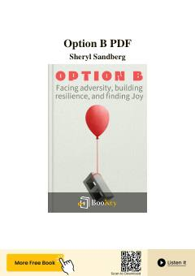

OBOg'ir yo'qotish va sinovlardan so'ng hayotda qanday qilib ichki kuch va qat'iyatni topish haqidagi kitob.
Sheryl Sandberg va Adam Grant tomonidan yozilgan ushbu kitob og'ir yo'qotishlar va sinovlardan keyin qanday qilib qat'iyat va ichki kuchni tiklash haqida hikoya qiladi. Mualliflar hayotdagi qiyin vaziyatlarni yengib o'tish, mustahkam psixologik barqarorlikni shakllantirish va yangi imkoniyatlarni topish yo'llarini ilmiy tadqiqotlar va shaxsiy tajribalar asosida tushuntirib beradi.